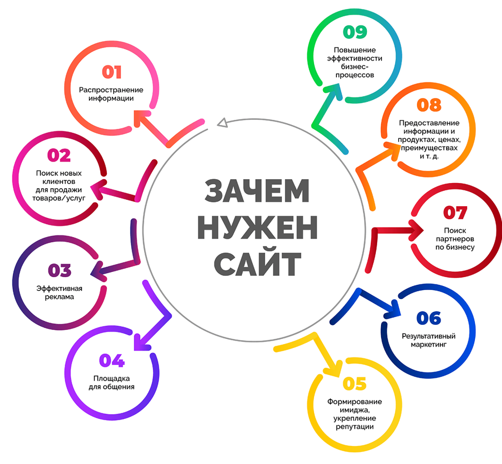
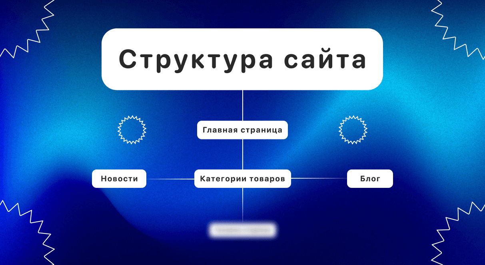

Как сделать сайт и для чего он.

Главные шаги для создания сайта
- Цель и тип: Поймите, зачем нужен сайт (лендинг, визитка, магазин).
- Платформа: Выберите готовый конструктор (например, Tilda Education) или систему управления (CMS), чтобы не писать код.
- Имя и хостинг: Купите красивый доменный адрес и место на сервере.
- Структура и дизайн: Набросайте план страниц и подберите визуальное оформление.
- Наполнение: Добавьте тексты, картинки и контакты.
- Тест и запуск: Проверьте, как сайт работает на телефоне и ПК, и откройте доступ для людей.
- Цель и тип: Поймите, зачем нужен сайт (лендинг, визитка, магазин).
- Платформа: Выберите готовый конструктор (например, Tilda Education) или систему управления (CMS), чтобы не писать код.
- Имя и хостинг: Купите красивый доменный адрес и место на сервере.
- Структура и дизайн: Набросайте план страниц и подберите визуальное оформление.
- Наполнение: Добавьте тексты, картинки и контакты.
- Тест и запуск: Проверьте, как сайт работает на телефоне и ПК, и откройте доступ для людей.
Как сделать сайт более защищенным.
Основные правила защиты сайта
-Подключите SSL-сертификат для перехода на безопасный протокол HTTPS.
-Меняйте пароли на длинные и сложные комбинации из букв, цифр и символов.
-Обновляйте CMS, темы и плагины сразу после выхода новых версий.
-Настройте регулярное резервное копирование (бэкапы) данных.
-Используйте безопасный протокол SFTP вместо обычного FTP.
-Ограничьте права доступа к панели управления и базе данных.
-Подключите SSL-сертификат для перехода на безопасный протокол HTTPS.
-Меняйте пароли на длинные и сложные комбинации из букв, цифр и символов.
-Обновляйте CMS, темы и плагины сразу после выхода новых версий.
-Настройте регулярное резервное копирование (бэкапы) данных.
-Используйте безопасный протокол SFTP вместо обычного FTP.
-Ограничьте права доступа к панели управления и базе данных.
Кто такие аналитик по информационной безопасности, Специалист по ИБ и Пентестер?
Специалист по ИБ
-Кто это: Профессионал, который строит общую систему защиты компании.
-Что делает: Настраивает правила доступа, ставит антивирусы, следит за законами о защите тайны.
-Главная цель: Сделать так, чтобы данные не украли.
Аналитик по информационной безопасности
-Кто это: Эксперт по мониторингу и выявлению цифровых угроз.
-Что делает: Читает системные логи, замечает странный трафик, расследует инциденты.
-Главная цель: Вовремя поймать хакера.
Пентестер (этичный хакер)
-Кто это: Специалист по тестам на проникновение.
-Что делает: Сам атакует сети и сайты компании, чтобы найти бреши до реальных злоумышленников.
-Главная цель: Найти и закрыть дыры в защите.
-Кто это: Профессионал, который строит общую систему защиты компании.
-Что делает: Настраивает правила доступа, ставит антивирусы, следит за законами о защите тайны.
-Главная цель: Сделать так, чтобы данные не украли.
Аналитик по информационной безопасности
-Кто это: Эксперт по мониторингу и выявлению цифровых угроз.
-Что делает: Читает системные логи, замечает странный трафик, расследует инциденты.
-Главная цель: Вовремя поймать хакера.
Пентестер (этичный хакер)
-Кто это: Специалист по тестам на проникновение.
-Что делает: Сам атакует сети и сайты компании, чтобы найти бреши до реальных злоумышленников.
-Главная цель: Найти и закрыть дыры в защите.

Что такое моделировение структуры сайта?
Моделирование структуры сайта — это проработка логики, по которой страницы будут связаны между собой, чтобы пользователю было легко ориентироваться, а поисковым системам — удобно индексировать ресурс.